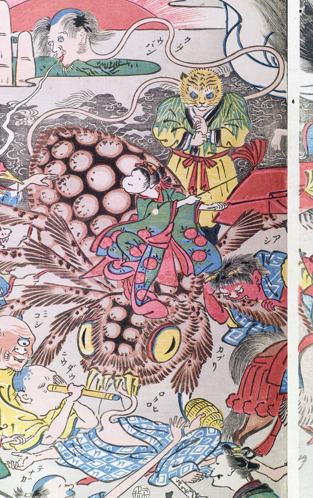

ろくろ首；ロクロクビ，男；オトコ

大蜘蛛の下に寝転んでいる男の首がくねくねと伸びている。男は散切り頭で無精ひげを生やし、口から煙のようなものを吐いている。着物の柄に、「ロクロ」とある。
著作者：玉園／出典：親書誌：U426_nichibunken_0145：画本西遊記百鬼夜行ノ圖；エホンサイユウキヒャッキヤギョウノズ／日付：2009／資源識別子：U426_nichibunken_0145_0009_0000
Copyright (c)2010- International Research Center for Japanese Studies, Kyoto, Japan. All rights reserved.